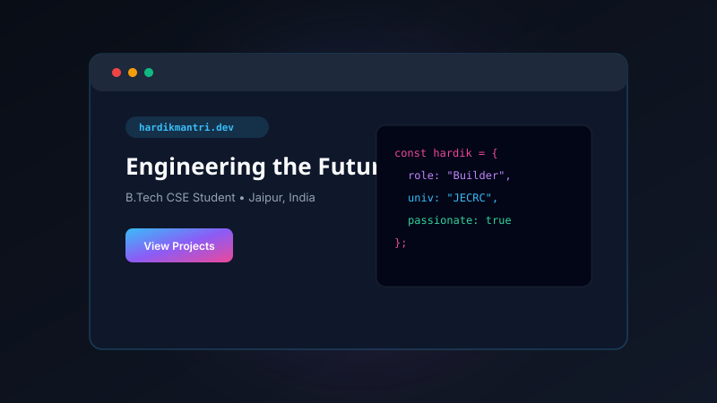
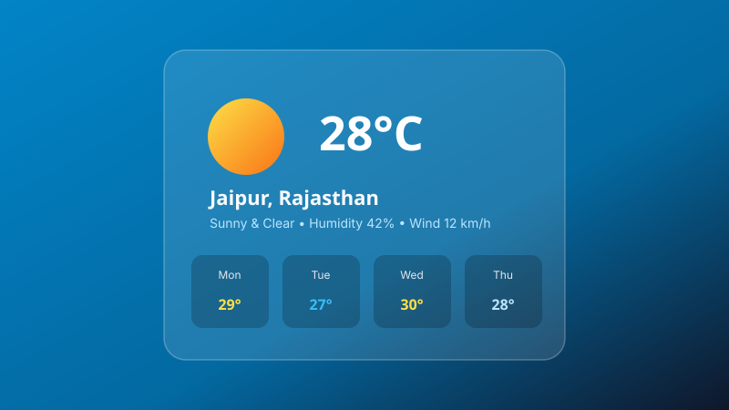

Featured Works
Projects & Creations
Real projects engineered to turn academic concepts into functional tools. Built using C++, JavaScript, and modern web frameworks with clean, documented code.


BankFlow – C++ Core Banking
Console-based banking engine engineered in C++ using Object-Oriented Programming (encapsulation, inheritance, polymorphism). Manages accounts, records timestamped ledgers, and saves encrypted binary files.

DevFolio – Personal Portfolio Suite
High-performance, multi-page portfolio built with vanilla web technologies, custom particle canvas background, glassmorphic UI cards, dynamic role typewriter, and dark/light mode toggle.

Have an idea for a project or want to collaborate on a hackathon?
Let's Build Something Together